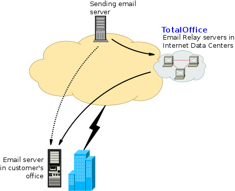

Missing Link in LINUX PLANET
Missing Link in LINUX PLANET
Linux Connector provides services relating to email and implementing solutions based on GNU Linux/FOSS.
OfficeConnector Cloud Email is provided out of dedicated services, fully operated by Linux Connector, in high quality, reputed data centers. Email for the customer comes (for which the MX records, in the DNS, for the customer's domains should point to our servers) to our “MX hosts” , i.e. Servers which receive and process the email, including security checks, spam & virus filtering, Blacklist checks, etc. The processed email then goes to user mailboxes, from where users can access it using the IMAP/POP3 protocol, or use webmail. Outgoing email is sent by the user using SMTP.
Customers can get email for multiple domains; create group email id lists with restrictions; and get reports on email traffic. Email archival is also supported, with a copy of all incoming & outgoing email being sent to another mailbox, from where it can be downloaded; or a Yahoo/Gmail id.
All the usual email clients like Outlook, Outlook Express, Thunderbird, Evolution on desktops and standard clients on smartphones (Android e.g. K-9, iPhone) are supported. (Note that we do not re-sell space from other service providers.)
In this service, the customer points the MX records for their domains to Linux Connector's servers, which results in email arriving there directly from the sending servers. At Linux Connector's servers, the email is processed and filtered (including spam/virus filtering, Blacklist checks, header checks, etc.) and then delivered to the customer's email server, which will usually be in the customer's office.
Linux Connector's mail servers (MX hosts) can act as the secondary MX host for customer domains, so that if the customer's host or Internet link is down, the incoming email won't bounce back and will come to Linux Connector's server; where it will be held for upto several days and the server will keep trying to relay it to the customer's server. This will save the embarassment of having emails bounce back to the original senders - which reflects poorly on the image of the company.
How do you check if your email service is working 24x7? WIth this service:
Hence this is an essential tool to check if your email service is up all the time, and to be alerted in case of any problems.
This service allows you to send custom emails to a list of recipients - it is very easy to use, with no complexities of databases, tracking, clicks, etc.
All that the user needs to do is:
These files are uploaded using the web interface. There is a provision for attaching files to the email message, apart from inline images (which don't show as attachments.) The “From” line and “Subject” line also need to be specified. The message is then “merged” and sent out to all the recipients listed in the merge file, one message per recipient. The recipient therefore feels that he/she has received an individual/personal email, which leads to a better impression and higher chances of a response
There is also an option to attach individual files to each recipient's email. It could be used to send individual letters (e.g. offer letters), invoices, etc.
It is a web based hosted service (SaaS) and customers only need to pay based on the number of emails they will be sending out. It can also be implemented on a system in the customer's office.
If the customer has an application which needs to send out email, an SMTP based relay service can be provided.
Note that this service is available for bona fide businesses and not spammers. It is ideal for alerts/notifications; sending periodical statements; sending company reports to shareholders (by company secretaries); business/industry/alumni associations; professional and trade bodies.
Linux Connector has vast expertise in setting up Linux servers, using standard open source components, for applications like Email and Proxy; we have set up 100s of such servers over the years.
Custom setup of email servers, which can scale up to 10s of thousands of users:
Setup of Proxy servers for browsing, with:
Linux Connector has many years of expertise in various Linux/FOSS related modules, and can setup custom servers/services (including hardware sizing, initial setup, training and ongoing management) using these:
These can be provided on any of the common distros like Debian, Ubuntu, RedHat, Fedora, CentOS, etc.
Back To Top
Copyright © 2013 - 2015 Linux Connector . All rights reserved.